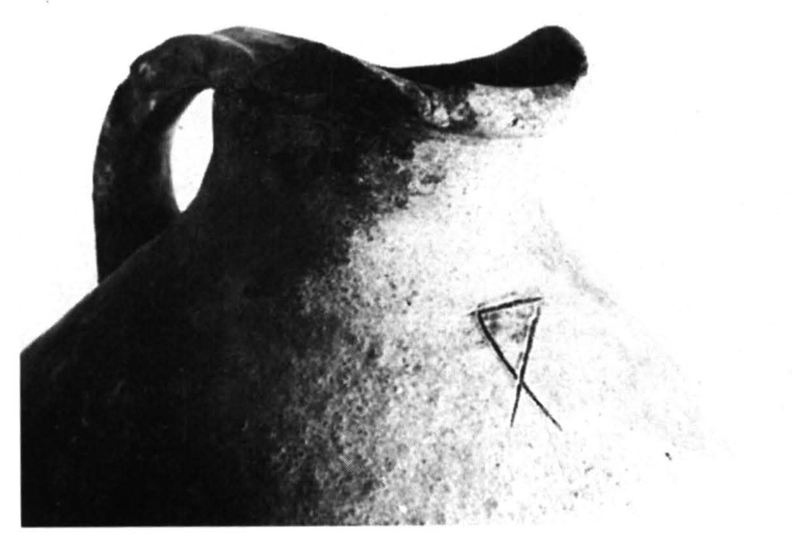

-
THEZb5
Names
THEZb5, TEZ5, THEZb6, THE Zb 5
Support
Clay vessel
Location
Thera
Findspot
Unavailable

Scribe
Unavailable
Context
Unavailable
Dimensions
Catalogue
Readings
1 1 0 JE none
𐘧
JE
𐘧
JE
THE Zb 6
(NMA 1110), jug (Raison-Pope 1994, 291: Z4)
JE (sign, not fraction)
Commentary © John Younger
References
papers/GORILA-Vol4.pdf#page=145